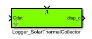
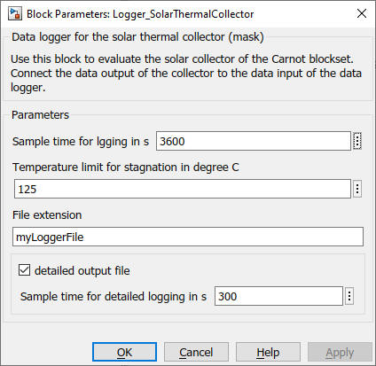

Logger_SolarThermalCollector
Path: Carnot/Outputs/Logger
Purpose
Creates data files which enable to evaluate the
solar thermal collector models of the Carnot blockset by using
cs_energy_collector
m-function.
Inputs:
Output:
The file contains the following information in timeseries. The timeseries appear in a structure with the variable "boiler".
For a full list of data point names see
2_Basic_Concepts.
Parameters and Dialog Box
The file "collectordetailoutput_extension.mat" is only written if the parameter "detailed output" is activated. Detailed outputs are written with a 60 s timestep only if the solar pump is working.
Specify a stagnation temperature as a parameter in the mask. Every timestep the collector temperature rises above this threshold is counted as stagnation time.

Examples
Logger_Boiler :
example_LoggerBoiler.slx
Characteristics
Direct Feedthrough Yes
Sample time entered
by user in block parameters
Vectorized No